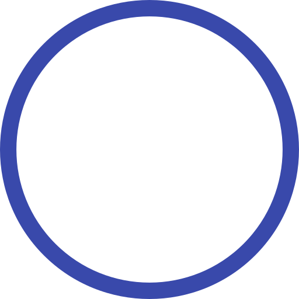

Béatrice Moulin Beltrame
En recherche d'apprentissage développeur web
Formation
2019
Hérouville St Clair
France
START.IO
Formation préqualifiante aux métiers du numérique
Certification TOSA
Certification CLEA NUMERIQUE
2013-2014
Caen
France
CNAM INTEC
Certificat de spécialisation Gestion des Associations
bla bla
1999-2002
Orléans
France
UNIVERSITE ORLEANS
Doctorat Science des Matériaux
bla bla
Expérience professionnelle
2012-2014
Caen
France
UREC, Rectorat
Suppléante Ecoles privées
Techniques pédagogiques, Mettre en place un planning
2010-2010
Caen
France
Croix Rouge Française
Initiatrice Premiers Secours
Animer une formation, Former un public
2005-20109
Caen
France
Laboratoire Catalyse et Spectrochimie, Université
Ingénieur de recherche
Etablir une méthodologie de travail, Mettre en place un planning
2003-2005
Lille
France
Syndicat National des Fabricants de Sucre de France et LASIR, Université
Ingénieur de recherche
Animer un groupe de travail, rédiger des rapports
2002-2003
Evry Val D'Essonne
France
Laboratoire Multicouches Nanométriques, Université
Ingénieur de recherche
Techniques pédagogiques, Superviser et réaliser des travaux de recherche, Présenter les résultats
Divers
Langues
Espagnol
Anglais

(Niveau 4 Avancé / C1 / Eq TOEIC 945+)
Compétences
Création et gestion de sites Web en utilisant des CMS (Wordpress, Joomla, Wix)
Intérêt pour l'ergonomie
Accessibilité Web
Référencement
Informatique
Développement web (HTML 5, CSS, JavaScript, PhP)
Méthodes : Agile
Modélisation : UML (diagramme de séquence)
Bureautique
Travail collaboratif : Trello, Slack